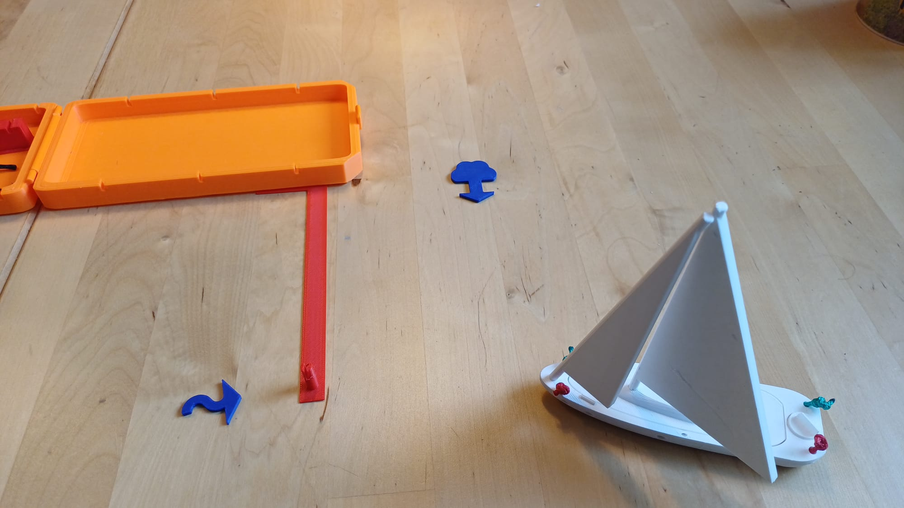
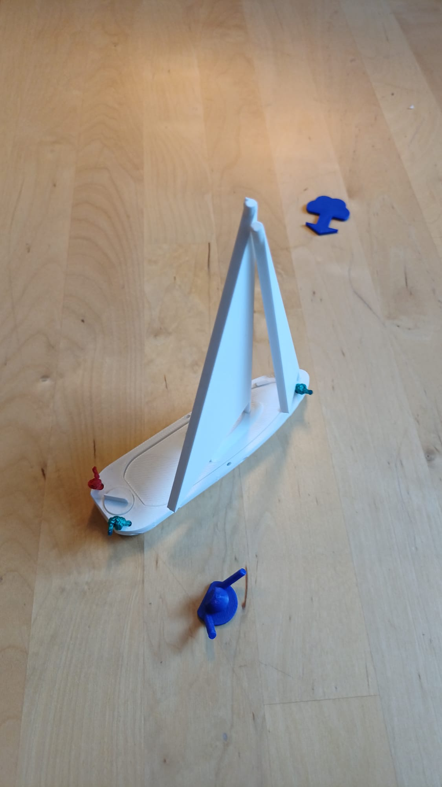

Aanleggen en wegvaren
Voordoen hoe de boot langs de kade beweegt, welke lijn spanning krijgt en waar de draai ontstaat.
Voor CWO, kajuitbootzeilen en praktijklessen
De ZeilDidactiek Manoeuvrekit is een compact instructiebootje waarmee je aanlegmanoeuvres, wind, stroom, landvasten en stootwillen direct op tafel kunt voordoen.


.jpeg)

De kit
De Manoeuvrekit is gemaakt voor instructeurs die lastige situaties snel tastbaar willen maken. In plaats van tekenen of gebaren schuif je het bootje, de steiger en de indicatoren over tafel.
Foto's
De kit is bedoeld om snel te wisselen tussen scenario's: aanleggen, wegvaren, stootwillen plaatsen, wind en stroom bespreken of een man-over-boord situatie naspelen.

In de les
Vooral bij aanlegmanoeuvres ontstaat verwarring snel: waar ligt de wind, welke lijn doet wat, wanneer draait de boeg weg en waar moeten de stootwillen hangen? Met de kit maak je dat zichtbaar.
Voordoen hoe de boot langs de kade beweegt, welke lijn spanning krijgt en waar de draai ontstaat.
Laat zien waarom dezelfde manoeuvre anders uitpakt bij aflandige wind, aanlandige wind of stroom.
Bespreek vooraf waar bescherming nodig is en laat cursisten zelf keuzes maken.
Speel een situatie na tijdens lunch, nabespreking of theorieblok.
Video
Een korte demonstratie maakt meteen duidelijk waar de kracht van de kit zit: beweging, positie en volgorde worden zichtbaar voor de hele groep.
Voor wie
Een compact hulpmiddel dat je meeneemt naar elk schip en elke lesplek.
Handig voor uniforme uitleg tussen instructeurs en voor theorielessen in kleine groepen.
Gebruik de kit bij opstapdagen, trainingen, winteravonden en instructeursopleidingen.
Prijs
De Manoeuvrekit is bewust compact en praktisch gehouden. Je betaalt voor een compleet hulpmiddel dat je direct in je les kunt gebruiken, zonder grote investering.
Voor zeilscholen en verenigingen maken we graag een pakketprijs bij meerdere kits.
Ik wil er een bestellenTestfase
De kit wordt eerst getest door collega-instructeurs. Hun ervaringen gebruiken we om de uitleg, voorbeelden en productdetails verder aan te scherpen.
“Hier komt binnenkort feedback van instructeurs die de Manoeuvrekit in echte lessen hebben gebruikt.”
Bestellen
Stuur een bericht met het gewenste aantal kits. Je ontvangt daarna bevestiging, verzendkosten en betaalinformatie.